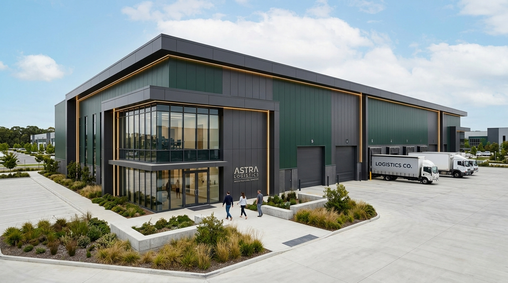

ARSITEKTUR KUSTOM MEWAH & KONSTRUKSI PRESISI
HARGOSARI, SRATEN, GATAK, SUKOHARJO — JAWA TENGAH
YOK BANGUN.ID adalah studio perancangan arsitektur dan pelaksana konstruksi bangunan yang berpusat di Hargosari, Sraten, Kec. Gatak, Kabupaten Sukoharjo, Jawa Tengah.
Kami mengintegrasikan perencanaan desain 3D yang detail dengan pelaksanaan konstruksi di lapangan. Mulai dari pembangunan rumah tinggal berkonsep modern minimalis dan Scandinavian, kost eksklusif bertingkat, klinik dan fasilitas komersial, hingga renovasi menyeluruh.
Setiap proyek dikerjakan dengan standar mutu ketat, spesifikasi material pilihan, dan kalkulasi anggaran yang transparan untuk mewujudkan bangunan yang kokoh, fungsional, dan bernilai estetika tinggi.
LIHAT PILIHAN DESAIN →Garansi pekerjaan fisik selama 6 bulan setelah serah terima kunci sebagai komitmen mutu dan tanggung jawab kami.
Perencanaan desain 3D detail terintegrasi langsung dengan eksekusi konstruksi fisik di lapangan.
Spesifikasi material pilihan dan ketelitian instalasi struktural untuk bangunan kokoh dan bernilai estetika tinggi.
Kalkulasi anggaran biaya yang sangat rinci dan terbuka tanpa markup atau biaya tersembunyi.
Empat pilar layanan terpadu YokBangun.id untuk menjawab seluruh kebutuhan desain arsitektur dan konstruksi fisik Anda.



Klik pada salah satu kartu proyek untuk membaca spesifikasi lengkap, denah, dan rincian arsitektur.
2,5 JT / M² • PILIHAN
LT 100 m² (10x10) LB ±70 m² — Fasad kayu alami, carport, & taman depan-belakang.
RUMAH 450 JT • ELEGAN
Fasad batu alam andesit berpadu panel kayu dan aksen pencahayaan LED warm.
PROYEK KOMERSIAL
3 Lantai fungsional mewah dengan garasi 6 mobil, void sirkulasi, & lobby.
 MULAI 2 JT / M²
MULAI 2 JT / M²
Desain fungsional 2 kamar tidur, pencahayaan alami dengan bujet terjangkau.
 DENAH & SPESIFIKASI
DENAH & SPESIFIKASI
Layout ergonomis 2 kamar tidur, dapur, ruang keluarga, dan cross-ventilation.
 VARIAN FASAD
VARIAN FASAD
Pilihan material kustom sesuai selera dan preferensi estetika Anda.
 PROYEK FISIK NYATA
PROYEK FISIK NYATA
Pembangunan gedung 2 lantai di Giriwono, Wonogiri dari nol sampai serah terima.
Konstruksi berkualitas tinggi tidak hanya dinilai dari apa yang tampak pada tahap akhir, tetapi berakar dari kedalaman pondasi dan ketelitian pelaksanaan.
Konstruksi berkualitas tinggi tidak hanya dinilai dari apa yang tampak pada tahap akhir. Kualitas sejati berakar dari kedalaman pondasi, pembesian beton bertulang berstandar SNI, ketelitian instalasi mekanikal-elektrikal, serta pemilihan material terbaik yang tahan cuaca tropis puluhan tahun ke depan.
Kami menerapkan manajemen Rencana Anggaran Biaya (RAB) yang sangat rinci dan transparan sejak awal sebelum peletakan batu pertama. Kami bertekad menjaga variansi biaya tetap terukur, tanpa biaya tersembunyi, sehingga proyek Anda selesai tepat waktu dan sesuai anggaran yang disepakati.
Mulai dari survei kontur tanah lapangan, pembuatan gambar 3D rendering fotorealistik, gambar bestek kerja arsitektur & struktur, hingga serah terima kunci — tim kami mendampingi setiap tahapan pembangunan dengan laporan berkala yang dapat Anda pantau setiap saat.


GIRIWONO, WONOGIRI — TAHAP 1 SAMPAI SELESAI
Pengecoran Lantai 2
Pasangan Dinding & Kolom
 Pekerjaan Plester Aci
Finishing Interior & Cat
Pekerjaan Plester Aci
Finishing Interior & Cat
Diskusikan ide dan rancangan bangunan Anda bersama tim arsitek dan kontraktor kami. Kami siap melayani konsultasi gratis dan survei lokasi.
YOK BANGUN.ID
Hargosari, Sraten, Kec. Gatak,
Kabupaten Sukoharjo, Jawa Tengah